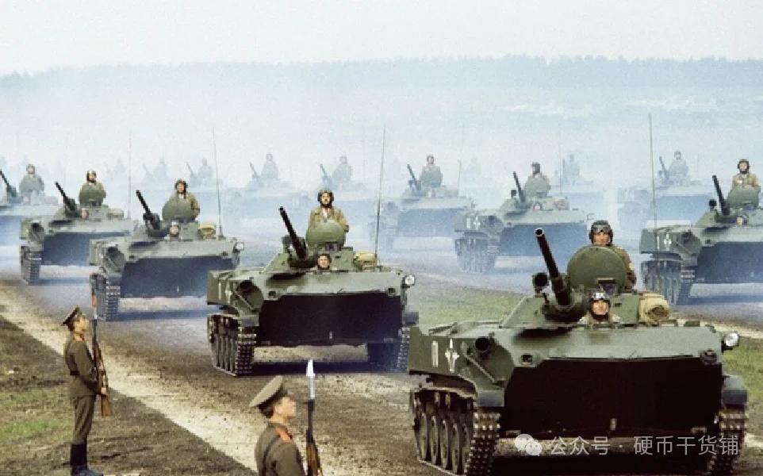
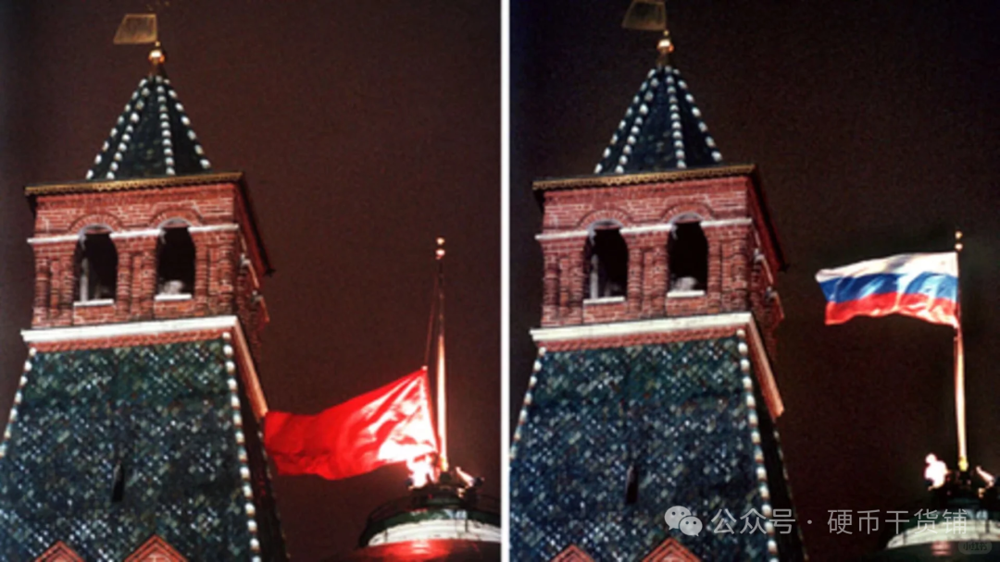
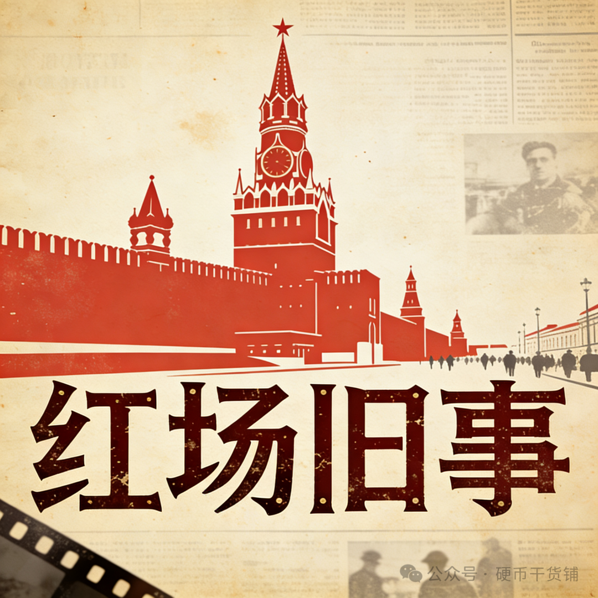

我们为什么要重读苏联？
文字与图片版权归各自权利人所有。 查看公众号原文 ↗
在 20 世纪的人类历史上，几乎没有哪个国家，能像苏联这样，让世界为之震撼、为之分裂、为之恐惧，也为之迷茫。

它曾是废墟上站起来的红色理想，是无数人心目中 “公平与正义” 的象征；它也曾是令西方颤抖的超级强权，是足以毁灭地球的核武巨人；它更在一夜之间，轰然解体，留给世界无尽的问号与叹息。
很多人觉得，苏联早已成为历史尘埃，冷战结束、红旗落地，一切都过去了。但我们今天依然要读苏联史，因为它从未真正 “过去”。
它是人类历史上规模最大、制度最完整、影响最深远的一次现代化实验：从革命理想、计划经济、社会改造，到全球革命、阵营对抗、核平衡秩序，它深刻塑造了 20 世纪的政治格局、意识形态、国家道路，甚至我们今天习以为常的世界秩序，都带着它留下的深刻烙印。
它的制度探索，影响了一整个时代的国家选择；它的革命浪潮，改写了亚非拉的殖民历史；它的冷战对峙，定义了二战后近半个世纪的全球格局；它的核平衡，既带来毁灭阴影，也维持了恐怖下的和平；而它的社会主义实践，从辉煌到困境，从理想走向僵化，更是人类现代化进程中最沉重、也最珍贵的一页教材。
所以，重读苏联，不只是怀旧，不只是猎奇，更是读懂我们身处的这个世界从何而来。
从这一期开始，《红场旧事》将用一整个系列，完整讲述这个超级大国的一生：从革命烈火中诞生，到艰难建国与巩固；从极速工业化与强国崛起，到体制逐渐僵化与停滞；从试图自救与改革，到最终失控、走向崩溃与解体。
我们会沿着一条清晰的脉络走下去：革命 — 建国 — 强盛 — 僵化 — 改革 — 崩溃。

而贯穿始终的，是一个最沉重、也最值得追问的命题：
一个曾经被视作 “人类希望” 的超级大国，一个拥有核武器、重工业、庞大军队、广阔版图的红色帝国，为什么会在短短数十年间，由盛转衰，最终不发一枪、不战而溃，以近乎平静的方式，彻底消失在历史之中？
它不是一天垮掉的。它的命运，早在诞生之初，就埋下了伏笔。
在接下来的篇章里，我们不讲空洞理论，不做极端站队，不戏说历史，也不刻意美化或抹黑。我们只做一件事：回到现场，回到人物，回到制度，回到普通人的生活，把苏联 70 年兴衰的逻辑，一层层拆开、讲透。
这里是《红场旧事》。一段帝国往事，一部 20 世纪启示录。从今天起，我们一起，从头读懂苏联。
